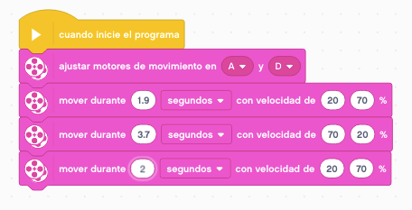
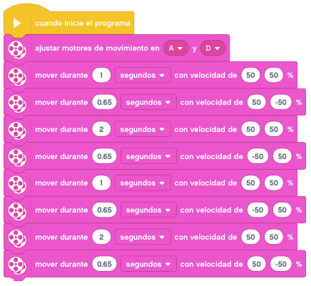

Para poder mover nuestro robot en linea recta bastaría con mover los dos motores al mismo tiempo y a la misma velocidad, positiva o negativa.
Lo primero que veremos será la forma que tenemos de mover nuestros motores. Hay tres formas:
- Por segundos: nuestros motores funcionaran durante el tiempo indicado. Cuando le indiquemos a los
motores que funcionen por segundos, tenemos que tener cuidado con la velocidad, ya que un cambio en
la misma, hará que nuestro robot se desplace más o menos distancia.
- Por grados: los motores funcionaran el número de grados indicados. Son grados de giro del motor
y se suele utilizar cuando tenemos que realizar movimientos muy pequeños y muy exactos. Con este
tipo de movimiento no dependeremos de la velocidad.
- Por rotaciones: cada motor hará las rotaciones que le indiquemos. Este tipo de movimiento nos
servirá cuando tengamos que hacer desplazamientos con una distancia más exacta, ya que sabiendo el
radio de nuestras ruedas y aplicando la fórmula de la circunferencia, podemos saber con exactitud
cuanto se desplaza en una rotación y por ende cuantas rotaciones nos hacen falta para llegar a
nuestro destino.
Para poder hacer giros con nuestra base tenemos que asignar velocidades distintas a los motores.
Con la base construida se pueden hacer tres tipos de giros distintos, cada uno de ellos lo podemos
utilizar según nuestras necesidades.
- Giro pibote: es el que realizamos parando una de las ruedas y avanzando con la otra. El eje de giro
se encontrará en el centro de la rueda que mantenemos parada.

- Giro sobre sí mismo: es el que realizamos cuando movemos una de las ruedas con velocidad positiva y la otra rueda con la velocidad inversa, es decir, con la misma velocidad pero en negativo. El eje de giro se encontrará en el centro del eje de las ruedas de nuestro robot.
- Giro en curva: es el que realizamos cuando movemos una de las ruedas con mayor velocidad que la otra y siempre las dos o posittivas o negativas. El eje de giro dependerá de las velocidades que pongamos, pero siempre estará fuera de nuestro robot.

Una vez montado nuestro
Robot Educador
realizaremos una serie de retos para aprender a mover nuestra base motriz.
Iremos de un lado a otro de la mesa cambiando las velocidades y al llegar al final volver hacia atrás.
Ahora nuestro robot deberá avanzar 1 metro. Lo haremos con cada una de las tres formas que tenemos para
mover nuestro motor (por segundos, por grados o por rotaciones). Cuando lo hagamos por rotaciones, lo
calcularemos mediante la fórmula de la circunferencia.
Después haremos llegar nuestro robot hasta el final de la mesa y daremos la vuelta (una vez con dada tipo de
giro) para volver al punto de partida. Estos giros han de ser de 180 grados para volver por el mismo sitio.